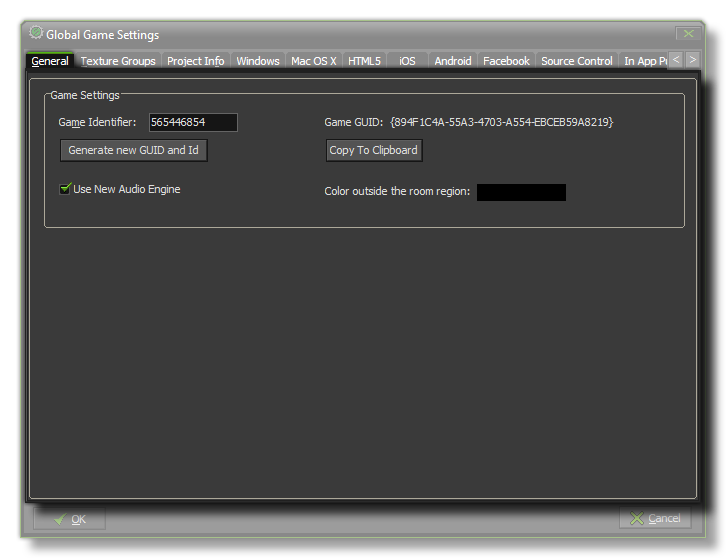

This tab deals with a couple of general aspects of how GameMaker:Studio will run your game.
Here you can choose the color to be drawn when the view goes outside of the room region (default is black), and you can generate a unique Game Identifier which can be accesed in your game by using
the constant game_id. The button to generate this id also re-creates the Game GUID hash which can then be
copied to the clipboard with the help of the button below for use in your applications and games.
You also have the option to turn off or on the new Audio Engine that GameMaker:Studio uses. Due to incompatabilities you cannot have both the new audio engine and the legacy sound engine
active at the same time. For old games created with other versions of GameMaker or for those games started before the new audio engine was added, the Legacy Audio will be used as default, while for
all new games GameMaker:Studio will default to the new audio system. However, you can change this at any time by flagging (or un-flagging) this option. For more information on the new Audio Engine,
please see the section on Game Assets - Sound.